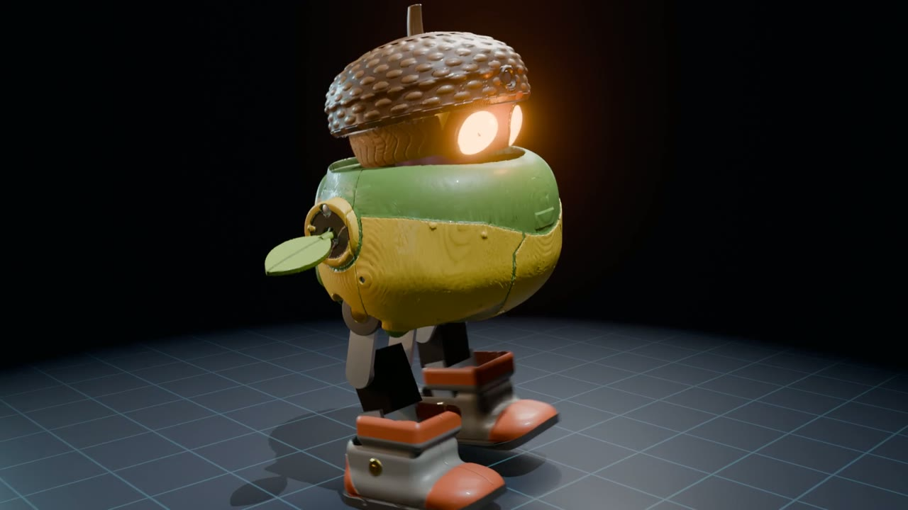

Projects
만든 것들
아이디어에서 완성까지, 실패한 것까지 그대로 남겨요. 프로젝트는 계속 추가됩니다.
🤖 로봇 · 피지컬 AI
시뮬레이션에서 배우고, 실물로 옮기기
진행 중 · 시뮬 졸업
토리 — 도토리 탐험가 로봇
키 26 cm, 관절 13개. 걷기·일어서기·인사·춤·눕기·턱 넘기까지 8가지 동작을 강화학습으로 배웠어요. 다음은 실물 조립.
🛞
준비 중
다음 로봇
바퀴와 팔로 물건을 가져오는 로봇, 육각 다리 로봇 등 후보를 검토하고 있어요.
🧠 AI가 꿈을 꾼다
AI는 어떻게 머릿속에 세상을 그리고, 꿈속에서 연습할까🧪 직접 해 보기
강화학습을 직접 돌려 본 기록 · 같은 카메라로 전/후 비교


⚙️ AI 업무 자동화
반복 업무를 AI 에이전트에게🎞️
준비 중
AI 유튜브 PD 에이전트
기획·대본·편집·업로드를 돕는 에이전트 제작기.
📣
준비 중
SNS 자동 발행
카드뉴스·쇼츠를 만들고 여러 채널에 예약 발행하기.